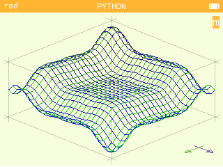
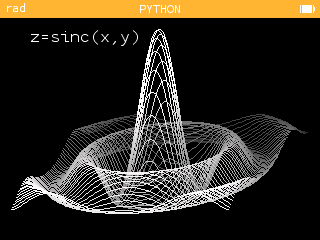
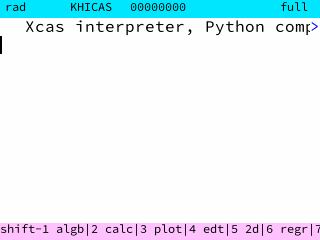
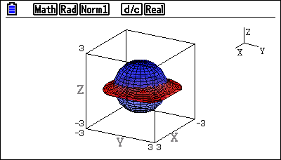
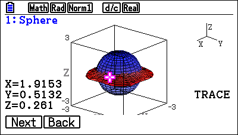
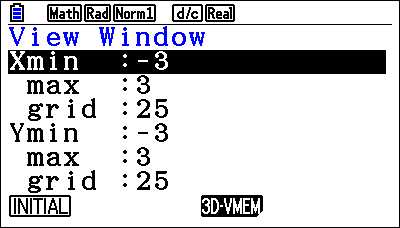
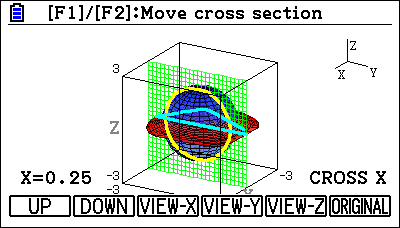
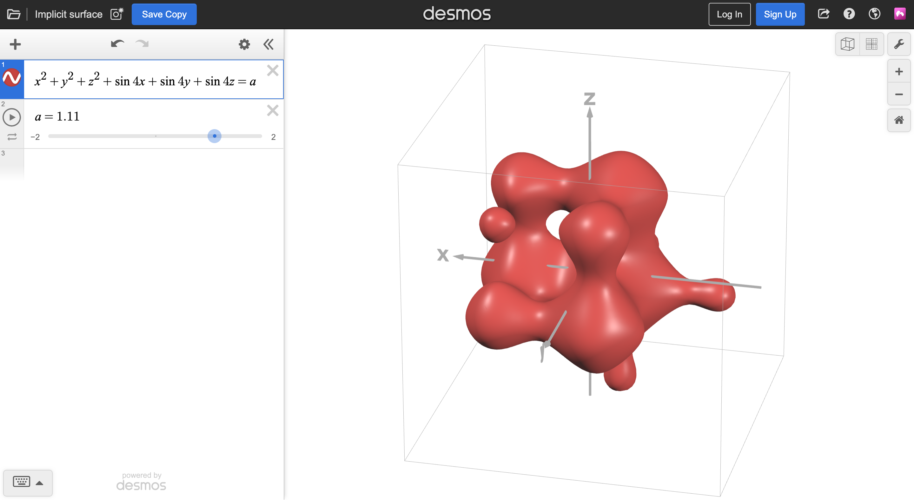

The capability of graphing in 3 dimensions is very desired of a graphing calculator, and as such many attempts have been made to provide the NumWorks calculators with this functionality. However, due to the limited capabilities of embedded hardware and the complexity of implicit graphs, these existing solutions fail to meet all the requirements of my end user.

draw_3d_graph is a Python script written for NumWorks’ MicroPython implementation. It takes an explicit function z = f(x,y) and graphs it

surf3d is a Python script written for NumWork’s MicroPython implementation.
The compiled .nwa in the latest release doesn’t load to the calculator and has a size of NaN KB.
Complex Numworks is a compiled Rust application for the NumWorks calculators distributed as an .nwa file.
NumcraftRust is a compiled Rust application for the NumWorks calculators distributed as an .nwa file. It is not a 3D graphing program at all, but it accomplishes the same task of a 3D rendering engine operating within the limited hardware of the NumWorks calculators. The application is an implementation of a basic cube sandbox game with movement, building and breaking mechanics.
The game runs at an average of 20 FPS on the N0100 and N0110, and at 50 FPS on the N120. This remains relatively stable even with thousands of polygons on the screen. Screen tearing is minimal and frames are drawn smoothly with no flickering. Various optimisations mean the application runs responsively enough for a positive user experience.
While its accomplishments are similar to what a 3D grapher should do, it obviously has no 3D graphing functionality. The purpose of the program is very different yet it still provides a solution to one of the problems faced by this project.

KhiCAS is a small, yet powerful Computer Algebra System that was ported to the NumWorks calculators as an app with a custom installation protocol. It implements its own mathematical statement parsing system.




The Casio fx-CG50 calculator has an official application for 3D graphing. Although the application comes installed with the calculator, it is not part of the suite of built-in apps and needs to be reinstalled manually as an add-in from a computer if the calculator is reset or crashes.
The application can only graph certain types of 3D graphs, limited to primitives such as spheres, cones, planes and cylinders. However, it allows the user to trace each function drawn, as well as rotating and scaling the viewport. Translating the graph is unintuitive, done numerically via the View Window. Graphs and points are saved between sessions so that the same graph only needs to be calculated once.
The fx-CG50 3D Graph app exemplifies what the user experience should look like when displaying the graph, although a few of the graph manipulation methods are not very user-friendly. Despite this, it is limited in capability with regards to explicit and implicit functions despite the fx-CG50’s 2D grapher having support for those. The program only functions on the fx-CG50 and is not compatible with any other calculators.

Desmos, a website that host free maths tools, has a beta test of a 3D graphing program to go alongside their 2D grapher. Built on the same system as the 2D grapher, it is smooth and feature-complete, and runs on most browsers using JavaScript.
The user experience is extremely positive, with a large feature set including variable sliders, animation and possible due to the capability of computer hardware. The program also offers several QOL features like custom colouring, domains, and labels for different functions. Graph manipulation is intuitive using keyboard & mouse controls.
The program is capable of plotting all kinds of graphs, including implicit functions, although it can trip up on complex surfaces involving tangents and undefined points.
3D Grapher is aimed at anybody using a NumWorks calculator for 3D mathematics, primarily students and teachers of A Level Further Mathematics.
The program aims to provide them with a simple to use, performative and feature-complete graphing app to use for the parts of the specification that include 3 dimensional graphs, in order to level the playing field between users of different calculators. It aims most of all to be a teaching aide that integrates itself into the workflow of A Level Further Mathematics classes.
3D Grapher is an application for the NumWorks graphing calculator meant to extend its graphing capabilities to 3 dimensions. It provides functionality similar to the fx-CG50’s 3D Graph app, allowing users to plot, display and manipulate graphs with 3 variables.
Users are able to enter explicit, parametric or implicit functions as a string which is parsed and plotted. The resulting graph can be viewed, rotated, scaled, translated and more to allow users to explore the graph’s shape and domain.
Graphing calculators are very popular with students of secondary and sixth form ages especially - manufacturers like Casio and NumWorks have bulk offers aimed at educators, purely because graphing calculators have such high educational value. Graphing programs - like built-in calculator applications, or websites like Desmos are often desired by teachers for visually demonstrating various parts of the syllabus.
The A Level Further Mathematics specification has many areas in which graphs in 3 dimensions are relevant to course content, such as vectors & geomtetry, multivariable calculus, and modelling. As a result, current solutions do exist to attempt to give educators the tools they need, yet fail to be integrated in the classroom.
Several solutions exist for producing a mesh of points from an implicit surface - this will be necessary for rasterizing implicit graphs (see 1.7 Objectives). I’ve chosen to use an algorithm called marching cubes because of its ease of integration with creating tris from its geometric mesh for rendering. With appropriately chosen interpolation methods, the mesh produced can show an accurate image of 3D implicit graphs to the user.
There are various ways to write software for the NumWorks calculator, with varying degrees of control and compatibility. NumWorks provides several sample applications on their GitHub which I used to research the different methods available.
NumWorks offers Epsilon App Development Kits for C, C++ and Rust which expose common I/O endpoints and type utilities. The EADK provides no reason to choose any language over another.
However, each language has its advantages: C is the most lightweight,
and typically the easiest to write clean, efficient code for. C++’s
object oriented additions as a superset of C gives greater structure
while adding complexity. Rust is a more modern language similar in level
to C++, while capable of producing faster programs.
Due to my personal experience with C/C++ and the complexity of the
project, C++ will be the language of choice for the 3D Grapher.
In addition, NumWorks details how you can develop your own userland version of Epsilon written in C++. Other developers have used this to create custom apps that function just like built-in Epsilon ones, which gives greater control over the API without the need of the EADK as a middleman. It also gives access to tools in the Epsilon architecture - most importantly Poincaré, the native mathematical expression parser, which I would use in my code.

This comes with a few drawbacks, most notably a complicated
development cycle. Epsilon versions 16+ make it very difficult to load
userland and have locked down much of the calculators developmental
capabilties. This makes the testing and debugging process rather
difficult without the convenience that comes from loading
.nwa files.
Applications also become more difficult to distribute as they become
part of a custom version of Epsilon, although the community has
developed some standards
.
NumWorks’ licenses also make this distribution legally grey (see Issue #38).
Aside from the development kit, a few libraries make for convenient shorcuts for performing memory-related tasks.
Yaya-Cout’s‘s library NumWorks
Extapp Storage uses some memory hacks to allow external apps to save
records in the NumWorks’ memory. Documentation is available here.
storage.c and storage.h can easily be added,
#included and compiled with the app. This library is
essential for persistent storage between sessions of the app, such as
saving calculated graphs or settings.
zlib and libpng are other lightweight libraries for image manipulation suited for the NumWorks, as evidenced by Nwagyu’s PNG Viewer. These libraries would be used to save screenshots of displayed graphs.
Graph manipulation is an important part of the application - it’s the way the user explores graphs they have created, which is crucial to the classroom workflow when learning using the 3D Grapher. This prototype demonstrates graph manipulation on several simple 3D objects plotted as a set of points.